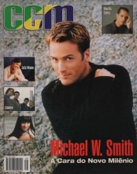

CMnexus
:
Contemporary Christian culture, music, and media.
Magazines
Profiles
Dove Awards
cmnexus.org
CM
nexus
→
Profiles
→
N
→
Wendy Lee Nentwig
Wendy Lee Nentwig
< -- Prev
ious
Next-- >
1
Writing credits listing
Feb 1998
in
CCM
20.8
Sierra
-
Story of Life
Tonio K.
-
Olé
Mar 1998
in
CCM
20.9
"Every Breath She Takes"
Michelle Tumes
"Master and the Musician"
Matt Redman
Apr 1998
in
CCM
20.10
CeCe Winans
-
Everlasting Love
May 1998
in
CCM
20.11
"WWBTRD"
Big Tent Revival
Jun 1998
in
CCM
20.12
various artists -
Exodus
Sep 1998
in
CCM Brasil
1.1
various artists -
Exodus
Oct 1998
in
CCM
21.4
Erin O'Donnell
-
Scratching the Surface
Dec 1998
in
CCM
21.6
Carman
-
Mission 3:16: The Video
The Supertones
-
At The Movies
Feb 1999
in
CCM
21.8
"On A Wing and A Prayer"
Bob Carlisle
Apr 1999
in
CCM
21.10
"Living Out Loud"
Carolyn Arends
May 1999
in
CCM
21.11
"Plumb Line"
Plumb
Jun 1999
in
CCM
21.12
"Healing Waters"
Streams
Aug 1999
in
CCM
22.2
"Turning Point"
Out of Eden
"Good Enough to Know Better"
Ginny Owens
Aug 1999
in
CCM Brasil
2.6
"Águas Ouradoras"
Streams
Oct 1999
in
CCM
22.4
"If I Had A Hammer"
Billy Crockett
Nov 1999
in
CCM
22.5
Tracy Dawn
-
Poetic Aftermath
"The Other Side of Garth Brooks"
Garth Brooks
,
Tommy Sims
,
Gordon Kennedy
Dec 1999
in
CCM
22.6
"Time Traveler"
Michael W. Smith
Send the Beggar
-
Closer to Complete
Dec 1999
in
CCM Brasil
2.8
"Plumb Line"
Plumb
Jan 2000
in
CCM
22.7
The Straw Theory
-
The Straw Theory
Angelo and Veronica
-
Change
Jan Krist
-
Love Big, Us Small

2000
in
CCM Brasil
3.9
"Viagem No Tempo"
Michael W. Smith
Mar 2000
in
CCM
22.9
"Piercing the Darkness"
Jonathan Pierce
2000
in
CCM Brasil
3.10
Angelo and Veronica
-
Change
The Straw Theory
-
The Straw Theory
May 2000
in
CCM
22.11
"Homesick"
Fernando Ortega
Jun 2000
in
CCM
22.12
Sierra
-
Change
Aug 2000
in
CCM
23.2
"Sibling Rivalry"
Kendall Payne
Oct 2000
in
CCM
23.4
"Promise Keepers"
Plus One
Dec 2000
in
CCM
23.6
"That's Why I'm Here"
Rebecca Saint James
Mar 2001
in
CCM
23.9
Sarah Masen
-
The Dreamlife of Angels
Apr 2001
in
CCM
23.10
"A Family Affair"
LaRue
May 2001
in
CCM
23.11
Rick Altizer
-
Go Nova
Jun 2001
in
CCM
23.12
Scott Krippayne
-
All of Me
Aug 2001
in
CCM
24.2
"Six Degrees of Nathan Nockels"
Watermark
Oct 2001
in
CCM
24.4
"Breaking Away"
Andrew Peterson
Nov 2001
in
CCM
24.5
"Reality Check"
Mark Schultz
Jun 2002
in
CCM
24.12
"GODapalooza"
Christian music festivals:
Explo '72
,
Jesus Festival (PA)
,
Creation Festival
,
Festival Con Dios
Aug 2002
in
URBAN
"Heart & Soul"
Michelle Williams
< -- Prev
ious
Next-- >
1
CMnexus
(noun)
The magazine index
of modern music
and Christianity
© 2011 CMnexus. Last updated May 2025.
Contact:
Rants and other correspondence to:
editor -AT- cmnexus
-DØT- org
About